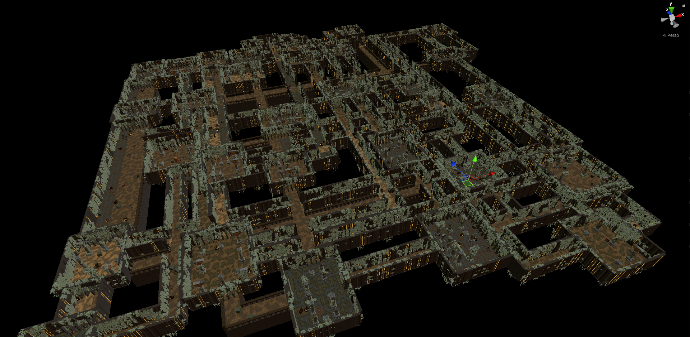

Project Rögue
A party dungeon crawler, build and manage your company of treasure hunters and travel a procedural world in the hunt for loot and glory.
- video / screenshots -
* Lua Integration
* Procedural Generation
* Character Customization
* Dijkstra Pathfinding


Using Lua to define spells, item abilties and other actions.
Project Rögue uses a single class to define abilities and spells available in the game, called the Action-class.
Any item (equipment or weapon) might have an arbitrary (or none) amount of actions in addition to their normal stat-changing variables.
This class wraps a Lua runtime integration, enabling me (and future modders) to easily define actions in a scripting fashion - similar to how World Of Warcraft addons are implemented.
The Action-class is accompanied by the ActionContext; a simple container class that exposes some local data which might be required in the action implementation.
The important parts of the Lua side of the action is the activate(context) and execute(context) methods.
activate(context) defines what type of target selection (if any) will be used for the action.
execute(context) handles any actual implementation of the action logic.
This is an example from one of the most common abilities, found on most ranged weapons in the game; "Aimed Shot".
activate(context) is set to single target (1st parameter) and actors only (5th parameter) selection, and capped to the max range of the equipped weapon (4th parameter).
execute(context) deals damage to any hit target, triggers animations and drains the shooters' stamina.
--validate must always return a bool
--validate decides if an action can be activated from the UI
function validate(context)
return context.caster.data.GetVital(2).current >= context.caster.data.GetEquipment(0).attackCost
end
--callbacks to c# and opens Target Selection
--with the specified parameters
--any string returned will be displayed as an error message.
function activate(context)
--if you don't need targeting, uncomment the line below
--execute(context)
--raise targeting
--1st parameter defines type of target selection:
--0 = SquareFromTile,
--1 = CircleFromTile,
--2 = LineToTile,
--3 = SingleTile,
--3rd parameter defines area radius, only applicable for:
--SquareFromTile
--CircleFromTile
--in range 1 .. n (please avoid huge numbers, performance decreases exponentially in worst case)
--4th parameter defines targeting max range
--use 0 for infinite range
--otherwise range should be > 0
--5th parameter, restrict targeting to actors only?
--true = only tiles with actors
--false = all available
--if you don't need targeting, comment the line below
GlobalEvents.Raise(31, 3, context, 1, context.caster.data.GetEquipment(0).range, true)
end
--execute should contain logic operations for the action
--any string returned will be displayed as an error message.
function execute(context)
--avoid os.time() in multiple copies of the same action
--if they are called on the same frame they will have identical random-values generated
--use context.caster.GetHashCode() to get a somewhat unique seed per actor
math.randomseed(os.time())
for k, v in pairs(context.tiles) do
if(v.entity != nil and v.entity.isActor) then
context.caster.OnAttack(context)
damage = context.caster.data.GetEquipment(0).GetDamageRoll()
v.entity.data.GetVital(0).Update(-damage)
v.entity.OnAttacked(context)
end
end
--drain stamina
context.caster.data.GetVital(2).Update(-context.caster.data.GetVital(2).current)
end
--returns the formatted tooltip used in the UI.
--HTML hex colors are supported for the <color>-tag, for example: <color=#ffffff> == <color=white>
function getDescription(context)
range = context.caster.data.GetEquipment(0).range
cost = context.caster.data.GetEquipment(0).attackCost
return string.format("Increases accuracy by <color=orange>50%%</color>\n\nDeals <color=orange>100%%</color> of weapon damage.\n\nRange: <color=yellow>%s</color>.\n\n<color=orange>This action will end your turn!</color>", range)
end
Procedurally generating interesting dungeons.
Dungeons in Project Rögue are generated in a hierarchial manner - at the root is the Dungeon-class which spawns
Regions (Room and Connection), whom in turn spawn PCGEntity, whom spawns SubPCGEntity.
Dungeon
Region
Room
PCGEntity
SubPCGEntity
Connection
PCGEntity
SubPCGEntityBefore generation some general settings such as dungeon theme, size, room count, enemy types are randomized.
A simple int[sizeX, sizeY, sizeZ] is initialized.
The dungeon will then recursively attempt to place rooms at random coordinates until it has placed enough rooms.
A room is given the origin coordinates along with size parameters - a virtual bool Validate()-function is responsible for this task.
This lets me implement different types of room (square, circle, great hall, chapel, cave, etc) without having to react to niche cases in my code.
If a room is successfully validated it will randomize more specific settings such as architecture, materials, etc, using the dungeon theme and room type as a filter to maintain a cohesive dungeon without losing variation.
Every tile in the room bound is also marked with a roomIndex in the int[,,].
Upon completion of room spawning, the dungeon will iterate through every room and generate a Connection to another room (with unconnected rooms given priority).
Connections are brute-force tunneled in L shapes, and merge with any other rooms or connections they encounter.
Similarly to rooms, connections also randomize types, architecture, materials etc when created.
After finally completing the generation, every room and connection is instantied - any location in the int[,,] where tiles with different room indices is marked as either walls or doors.
Any non-used tile is marked as void, and the grid is initialized.
So, what's the point with PCGEntity and SubPCGEntity?
One common issue with procedurally generated dungeons is that they tend to become very repetitive, as the player starts recognize assets resued.
To avoid that, any asset that is placed in the dungeon regions is marked as a PCGEntity, this script contains some metadata regarding the asset itself.
Such as;
Does it block the tile it is placed on?
Does it block any surrounding tiles?
Does it block line of sight?
When spawned, any object with a SubPCGEntity-script parented under a PCGEntity will also be spawned, this allows me to easily decorate larger setpieces at runtime.
The SubPCGEntity contains a category (which allows regions to dictate how much of a certain type they want, as a number between 0 .. 1), a list of prefabs it can spawn, and some placement randomization values.
I believe I can let the difference speak for itself.

Without.

With.
A smaller procedurally generated dungeon, circa 30 rooms.
Dijkstra Implementation using Priority Queue Optimization.
public static Dictionary<Tile, float> Dijkstra(Dictionary<Tile, float> map, Tile origin, int maxDistance, bool ignoreOccupiedTiles)
{
//can be removed if we can guarantee non-corrupted maps to improve performance further - however in the current build this is not necessary.
map.Clear();
SimplePriorityQueue<Tile, float> open = new SimplePriorityQueue<Tile, float>();
HashSet<Tile> closed = new HashSet<Tile>();
open.Enqueue(origin, 0f);
map.Add(origin, 0f);
while (open.Count > 0)
{
Tile tile = open.Dequeue();
closed.Add(tile);
float cd = map[tile];
//operate around current tile
for (int xAround = (int)tile.position.x - 1; xAround <= (int)tile.position.x + 1; xAround++)
{
for (int zAround = (int)tile.position.z - 1; zAround <= (int)tile.position.z + 1; zAround++)
{
//skip positions that'd be outside of the grid boundaries
if (xAround < 0 || xAround > Grid.size - 1 || zAround < 0 || zAround > Grid.size - 1)
continue;
Tile current = Grid.Get(xAround, zAround);
if (closed.Contains(current) || (ignoreOccupiedTiles ? !current.isTraversable : current.status != TileStatus.Walkable))
continue;
float pd = cd + Distance(tile, current);
if (pd > maxDistance)
continue;
if (map.ContainsKey(current))
{
if (map[current] > pd)
map[current] = pd;
open.UpdatePriority(current, pd);
}
else
{
map[current] = pd;
open.Enqueue(current, pd);
}
}
}
}
return map;
}